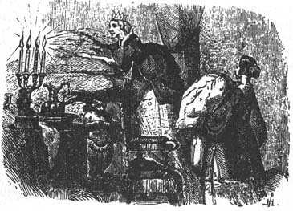

Sang Putri dan Kacang Polong

Dahulu kala, ada seorang pangeran yang ingin menikahi seorang putri; tetapi putri itu haruslah menjadi putri sejati. Dia melakukan perjalanan ke seluruh dunia untuk menemukannya, tetapi dia tidak bisa mendapatkan apa yang diinginkannya. Ada cukup banyak putri, tetapi sulit untuk mengetahui apakah mereka adalah putri sejati. Selalu ada sesuatu tentang mereka yang tidak sesuai. Jadi dia pulang lagi dan merasa sedih, karena dia sangat ingin memiliki seorang putri sejati.
Suatu malam badai besar melanda; ada petir dan kilat, dan hujan turun dengan derasnya. Tiba-tiba terdengar ketukan di gerbang kota, dan raja tua pergi untuk membukanya.
Di luar gerbang, ada seorang putri berdiri di sana. Tetapi, ya ampun! bagaimana penampilannya setelah hujan dan angin melanda. Air mengalir dari rambut dan pakaiannya; air itu masuk ke ujung sepatunya dan keluar lagi dari tumitnya. Namun, dia mengaku sebagai putri sejati.
“Baiklah, kita akan segera mengetahuinya,” pikir ratu tua. Tapi dia tidak mengatakan apa-apa, masuk ke kamar tidur, melepas semua seprai dari tempat tidur, dan meletakkan sebutir kacang ervil di bagian bawah tempat tidur; kemudian dia mengambil dua puluh kasur dan meletakkannya di atas kacang ervil, dan kemudian dua puluh tempat tidur bulu angsa di atas kasur-kasur.
Putri itu harus tidur di atasnya sepanjang malam. Pagi-pagi dia ditanya bagaimana tidurnya.
“Oh, sangat buruk!” katanya. “Saya hampir tidak bisa menutup mata sepanjang malam. Surga saja yang tahu apa yang ada di dalam tempat tidur itu, tetapi saya berbaring di atas sesuatu yang keras, sehingga saya biru-biru di seluruh tubuh saya. Itu mengerikan!”
Sekarang mereka tahu bahwa dia adalah putri sejati karena dia telah merasakan kacang ervil melalui dua puluh kasur dan dua puluh tempat tidur bulu angsa.
Hanya seorang putri sejati yang bisa sepeka itu.
Jadi pangeran itu menjadikannya istrinya, karena sekarang dia tahu bahwa dia memiliki seorang putri sejati; dan kacang ervil itu ditempatkan di museum, di mana masih bisa dilihat, jika tidak ada yang mencurinya.